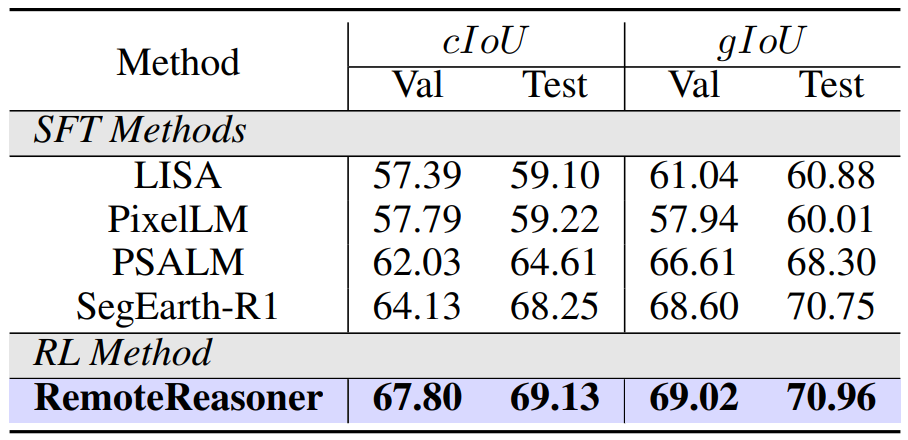
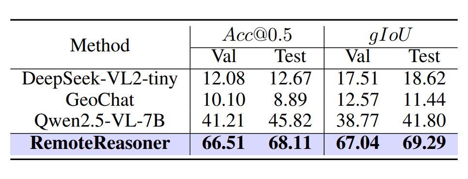
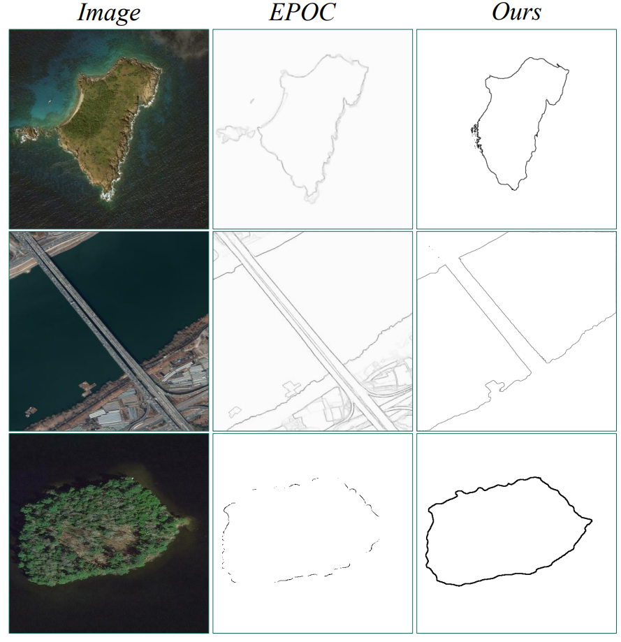
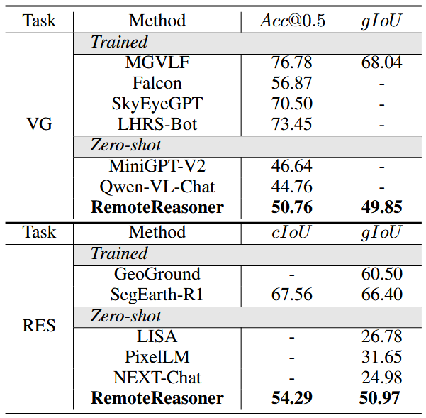
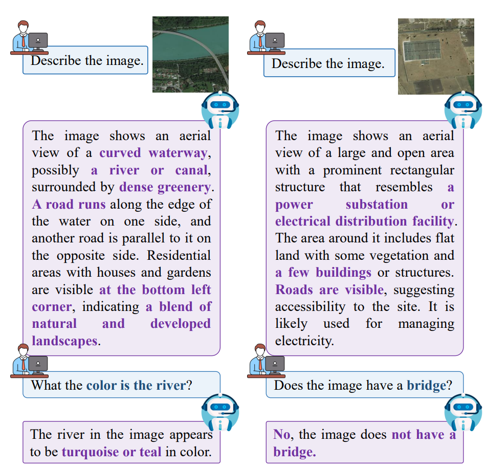

- Unified geospatial reasoning workflow. We propose RemoteResoner, a unified yet generalized reasoning workflow for Earth observation, which reveals that integrating pure RL and task transformation strategies could handle multi-granularity reasoning tasks.
- New reasoning tasks and datasets. We introduce two novel geospatial reasoning tasks, region reasoning and contour reasoning. We also provide the corresponding precisely annotated datasets to facilitate the advancement of remote sensing research.
- Holistic evaluation. Holistic evaluations demonstrate that RemoteReasoner achieves superior generalization capabilities and efficiency in handling multi-granularity reasoning tasks through a single forward pass.

Geospatial Pixel Reasoning Results on EarthReason. It is worth noting that RemoteReasoner was not trained directly utilizing its segmentation labels.

Geospatial Region Reasoning Results.

Geospatial Contour Reasoning Results. We select EPOC (Chen et al. 2024a) for comparison.

Performance on unseen tasks. VG and RES are Visual Grounding and Referring Expression Segmentation.

Quantitative results of other tasks (Image Captioning & VQA).